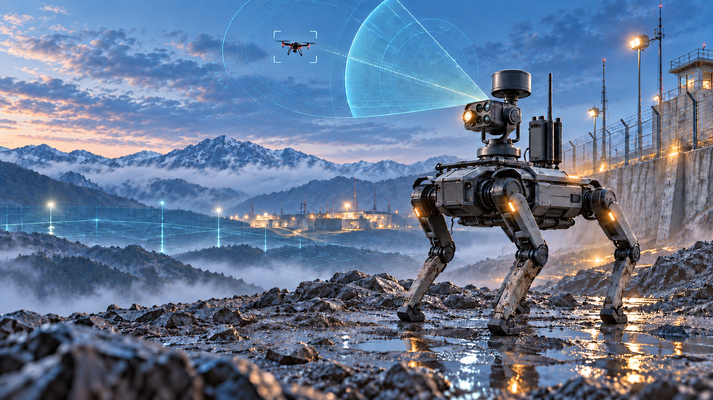

A / COMPACT
100m³
Point sensible
Pour un poste isolé, un accès critique, un sas ou une zone de passage à forte contrainte.
Demander le détail ↗Dossier de préparation · Défense & sécurité
Une approche mobile, instrumentée et évolutive pour renforcer la protection des personnels exposés aux menaces aériennes et aux risques du terrain.

01 / Le concept
Le dispositif associe un robot mobile de type quadrupède, une détection gyroscopique à très faible latence opérant en multifréquences, et un module de réaction de précision.
Positionné en avant ou en périphérie d'une équipe, il forme un premier rideau entre la menace et le personnel humain. Il contribue à sécuriser un volume hémisphérique et à maintenir une capacité d'alerte dans les zones difficiles d'accès, instables ou particulièrement exposées.
02 / Configurations
Trois niveaux de sécurisation permettent d'adapter le dispositif à l'espace à protéger, au contexte de mission et au niveau d'exposition.
Pour un poste isolé, un accès critique, un sas ou une zone de passage à forte contrainte.
Demander le détail ↗Un compromis entre mobilité, couverture et capacité de réaction pour une équipe en mouvement.
Demander le détail ↗Pour sécuriser une emprise plus large, une zone logistique, un point d'appui ou un périmètre.
Demander le détail ↗03 / Option +2
Un module complémentaire peut étendre la mission du robot à la reconnaissance du sol et à la détection d'indices de mines antipersonnel, afin d'améliorer la sécurité des cheminements et des abords.
Option à qualifier selon le capteur retenu, le niveau de précision attendu, la nature du terrain et le protocole d'intervention.
Évaluer l'option +2 ↗04 / Proposition commerciale
La page est prête à recevoir les montants, conditions de vente et coordonnées commerciales. En l'état, les prix sont indiqués sur devis pour éviter toute promesse non validée.
05 / Prochaine étape
Ajoutez ici votre nom, votre adresse e-mail et votre numéro de stand dès qu'ils seront confirmés. Le bouton ci-dessous peut être relié à un formulaire, une adresse e-mail ou une page de prise de rendez-vous.